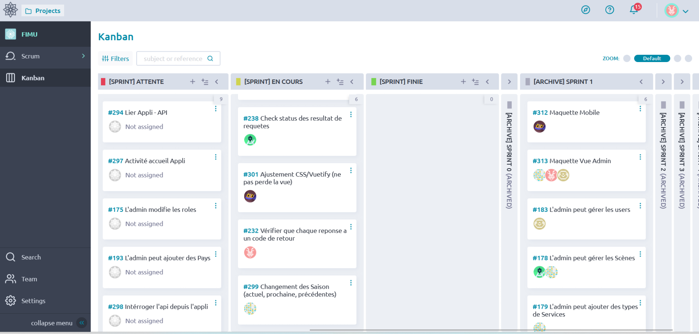
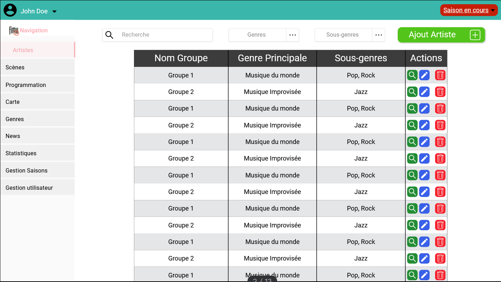
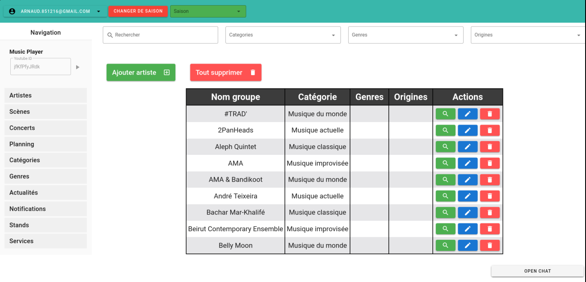
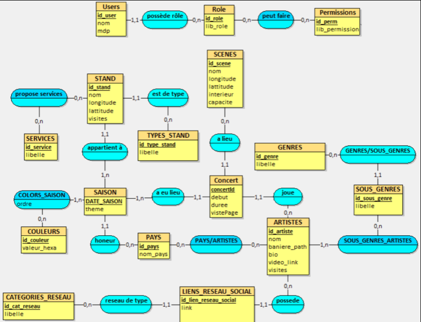

Introduction
Cette SAE était un projet en groupe de 6 personnes ayant comme objectif de développer un site administratif en suivant une méthode de développement agile.
Ayant été contacté par le FIMU (le Festival Internationnal de Musique Universitaire), il nous a été demandé de développer un site qui sera par la suite lié à une application mobile. Ce site devra permettre au responsable du FIMU de stocker les informations de tous les groupes qui seront présents lors de l'événement, mais aussi d'y insérer les scènes ou encore les horaires de passage des différents groupes.
Cette SAE permettra au client de stocker toutes les données qu'il rendait publiques à travers leur site internet et qui nous permettrons par la suite de développer une application mobile destinée au festivalier.
Trello
Travail personnel
Durant cette SAE, les tâches ont été réparties de manière à ce que tout le monde participe à toutes les parties du développement du site. Mes actions ont donc été :
- Participation à la création de la base de données ainsi qu'à sa mise à jour régulière.
- Participation à la mise en place des tâches dans le trello.
- Développement de plusieurs modèles servant à stocker les données récupérées depuis la base de données que nous utiliserons dans le site web.
- Développement de controller lié aux models créés précédemment.
- Participation à la création des maquettes du site web.
- Participation au développement de certaines pages web.
Langages utilisés
- VueJS
- JavaScript
- PostgreSQL
- NodeJS
Maquette site
Site Web
MCD
Compétences
Réaliser un développement d'applications : Ce projet m'a permis d'améliorer mes compétences en conception et mis en oeuvre d'une application. Durant ce projet, j'ai pu mettre en pratique et améliorer cette compétence, ce qui m'a donc permis de développer les fonctionnalités nécessaires pour notre site web, en les adaptant aux besoins des clients.
Gérer des données de l'information : J'ai également pu améliorer mes compétences en matière de gestion de données, en créant et en manipulant la base de données de même que via la création des différents models de données que nous avons utilisées pour l'affichage des données dans le site web.
Conduire un projet : Grâce à la planification des sprints effectués sur un intervalle de 2 semaines tout au long du projet, j'ai pu améliorer mes compétences en thermes de conduite de projet, ce qui m'a permis de développer les parties du site web qui m'ont été attribuées dans les temps.
C'est donc grâce à l'utilisation et l'amélioration de toutes ses compétences, qui ont renforcé ma capacité à travailler en équipes mais aussi seul, ce qui nous a permis de développer notre site web efficacement.